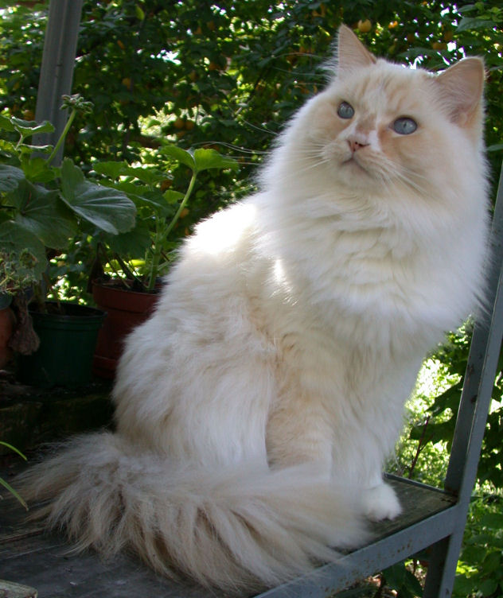

The Ragamuffin (often spelled RagaMuffin) is a breed of domestic cat. It is a variant of the Ragdoll cat and was established as a separate breed in 1994. Ragamuffins are notable for their friendly personalities and thick, rabbitlike fur.
Ragamuffins are a muscular, heavy breed of cat needing approximately four to five years to fully mature.[1] The physical traits of the breed include a rectangular, broad-chested body with shoulders supporting a short neck. Ragamuffins come in all coat colors and patterns, with a medium-length coat that increases in length toward the stomach. Although the coat is thick and plush, it does not readily mat or clump and is easy to care for.
The head is a broad, modified wedge with a moderately rounded forehead and a nose dip. The body should appear rectangular with a broad chest and broad shoulders and moderately heavy muscling in the hindquarters, with the hindquarters being equally broad as the shoulders. There should be a fatty pad in the lower abdomen. Fur length is to be slightly longer around the neck and outer edges of the face, resulting in the appearance of a ruff. The fur should increase in length from the top of the head down through the shoulder blades and back, with the coat on the sides and stomach being medium to medium long. Every color and pattern is allowable, with or without white. Some color patterns, such as pure white, are rarer than others and are generally in greater demand.
References:
This article uses material from the Wikipedia article ”Ragamuffin", which is released under the Creative Commons Attribution-Share-Alike License 3.0
Picture: “20050922AmarilloRes" by "Iris Preyler-Hamertinger" - Own work. Licensed under CC BY-SA 3.0 via commons.wikimedia.org/wiki/.
{kind=link}